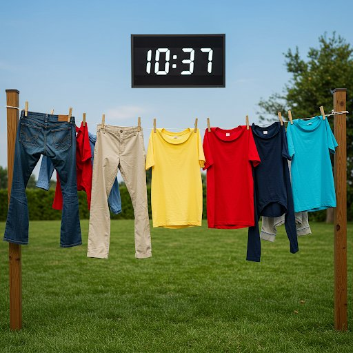

¿Cuánto tarda en secarse la ropa tendida?
Normalmente unas horas en un día cálido y con algo de viento, y mucho más cuando hace frío y hay humedad. Usa el pronóstico del tiempo para ver cuándo estará seca tu ropa hoy.

¿Para qué sirve la calculadora?
- asegurarte de que la ropa se seque antes de que empiece a llover.
- si secas en casa, saber si conviene encender la calefacción o un ventilador.
- si necesitas una prenda para una ocasión, saber si lavarla ahora o si puede esperar a mañana.
Preguntas y respuestas
¿Qué grosor tiene mi ropa?
Las toallas, los jerséis o los vaqueros tienen 2 mm de grosor. Las camisetas, 1 mm. Las camisetas técnicas tienen un grosor efectivo de 0,5 mm. Si las prendas quedan un poco dobladas al tenderlas (por ejemplo cerca de las mangas), su grosor efectivo se duplica.
¿Qué temperatura y humedad pongo si seco la ropa en casa?
Sin calefacción, la temperatura media del día y la noche, y lo mismo con la humedad. Con calefacción, la temperatura máxima, es decir, la del mediodía. Dentro de casa, la velocidad del viento es 0.
¿Cómo hacer que la ropa tendida se seque antes?
Tiende la ropa con espacio entre las prendas, pon en las cuerdas exteriores la que tarda más en secarse y, si es posible, coloca las cuerdas paralelas a la dirección del viento dominante. Si secas en casa sin calefacción, abre una ventana (mejor dos ventanas, o una ventana y una puerta).
¿Lloverá antes de que se seque la ropa?
Con el pronóstico, la calculadora te avisa si se espera lluvia antes de que la ropa se seque, y muestra cuándo debería empezar a llover y la mayor probabilidad de lluvia durante el secado.
¿Cómo saber si la ropa está seca?
Revisa primero la prenda que tarda más en secarse, normalmente la más gruesa: toca su centro y comprueba que esté seca. Si lo está, revisa también las partes gruesas, por ejemplo una cinturilla, zonas como la unión de la manga con la camiseta, donde al tender se forman pliegues que son lo último en secarse, y los sitios donde estaban las pinzas.
¿Se secará hoy mi ropa?
Usa el pronóstico del tiempo: la calculadora usa el pronóstico de tu zona, hora por hora, y te dice cuánto tardará tu ropa en secarse y hacia qué hora estará seca. También te avisa si se espera lluvia antes.
¿A qué hora recoger la ropa?
Elige cuándo tiendes y qué tiendes (la prenda más gruesa), y la calculadora te muestra hacia qué hora estará seca. Si antes se espera lluvia, también muestra cuándo debería empezar, para que puedas recoger la ropa a tiempo.
¿Cuánto tarda en secarse la ropa dentro de casa?
Dentro de casa no hay viento, así que la ropa se seca más despacio. Activa «Secado en casa»: la calculadora usa la temperatura y la humedad medias de las próximas 24 horas, sin viento. Sube la temperatura para ver el efecto de la calefacción, o el viento para un ventilador.
¿Se seca la ropa por la noche?
Despacio. Por la noche la temperatura baja y la humedad sube, a veces casi al 100 %, así que el aire apenas absorbe agua. Elige una hora de tendido por la tarde o la noche para ver cuánto tarda con el pronóstico para la noche.
¿Cómo saber si la ropa está seca?
- Revisa primero la prenda que tarda más en secarse, normalmente la más gruesa.
- Toca el centro de la prenda y comprueba que esté seca.
- Si lo está, revisa también las partes gruesas, por ejemplo una cinturilla.
- Revisa zonas como la unión de la manga con la camiseta: al tenderla se pueden formar pliegues, que son lo último en secarse.
- Revisa también donde estaban las pinzas: ahí la tela queda apretada y se seca despacio.
Reglas prácticas para la calculadora
- En casa sin calefacción, usa la temperatura media del día y la noche, y lo mismo con la humedad.
- En casa con calefacción, usa la temperatura máxima, es decir, la del mediodía.
- Las toallas, los jerséis o los vaqueros tienen 2 mm de grosor.
- Las camisetas tienen 1 mm de grosor.
- Las camisetas técnicas tienen un grosor efectivo de 0,5 mm.
- La calculadora solo funciona por encima de 0 °C.
Consejos
- Si tiendes en casa sin calefacción, abre una ventana (mejor dos ventanas, o una ventana y una puerta).
- Pon en las cuerdas exteriores la ropa que tarda más en secarse.
- Tiende la ropa con espacio entre las prendas.
- Tiende la ropa del revés para proteger la tela del sol.
- Si las prendas quedan un poco dobladas al tenderlas (por ejemplo cerca de las mangas), su grosor efectivo se duplica.
- Sacude la ropa antes de tenderla: tendrá menos arrugas y soltará la suciedad que quede.
- Si es posible, coloca las cuerdas paralelas a la dirección del viento dominante.
- Si hace mucho viento, usa más pinzas.